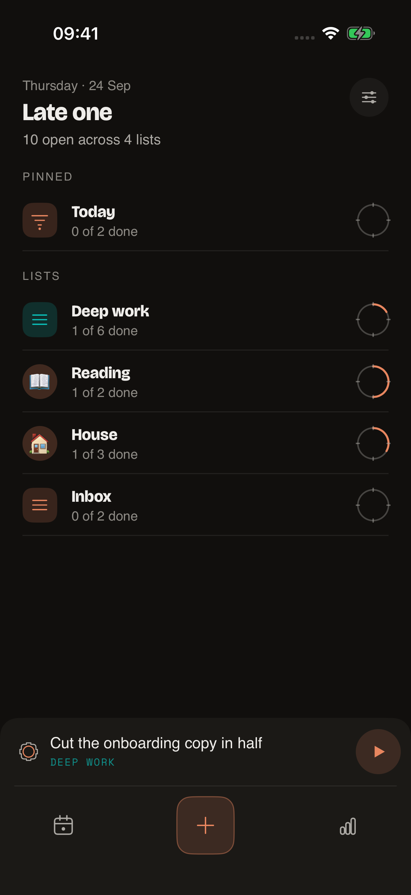
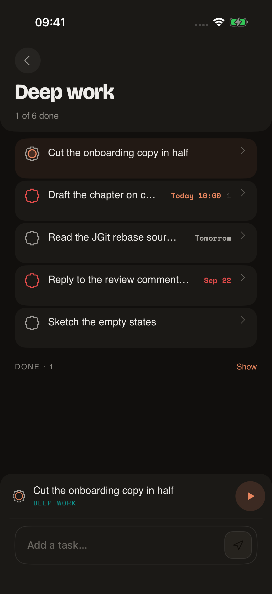
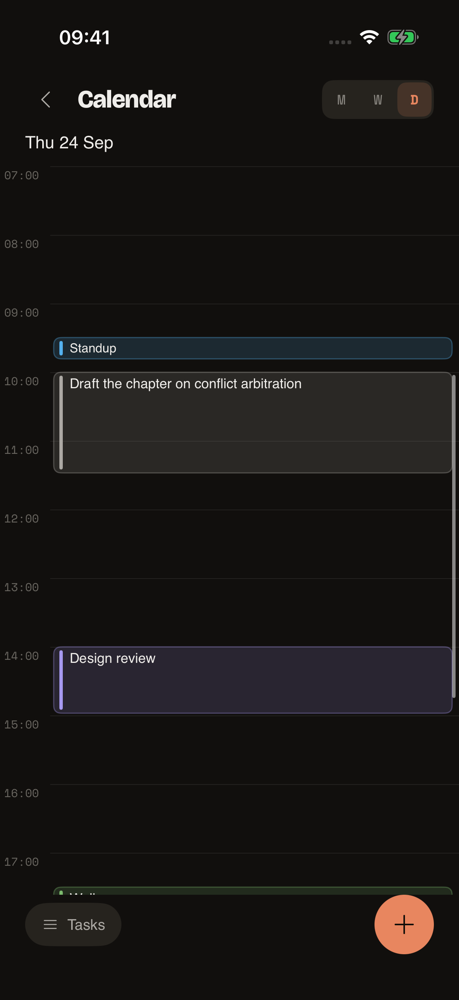
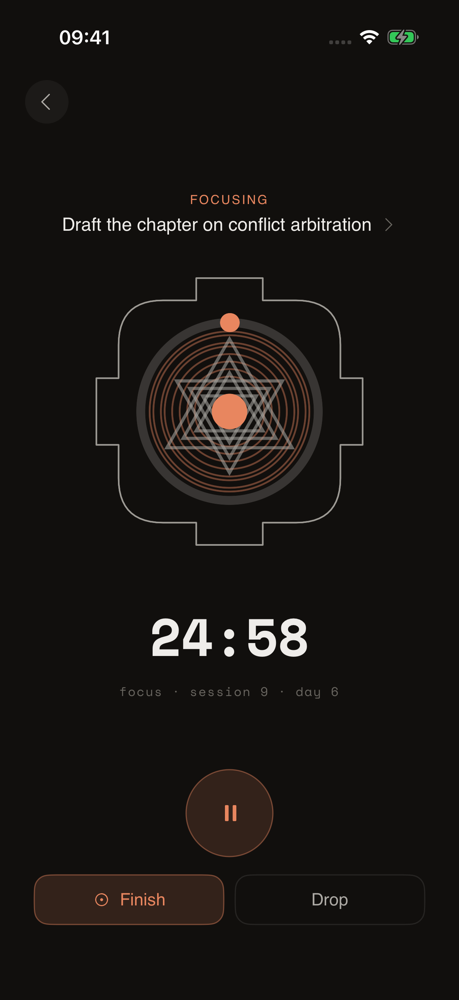
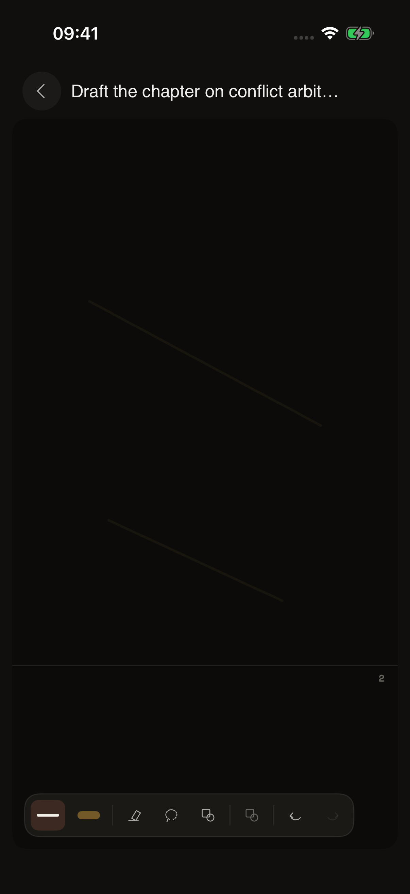
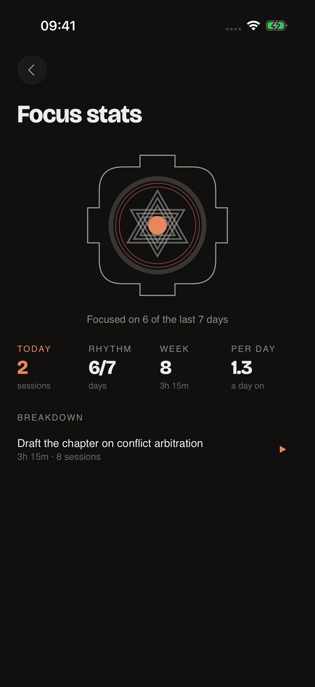

Home is every list you have
Each row counts only its tasks — the events on a page are not tasks and are not counted, and an archived task has left the list, so it is not counted either. The ring closes as a list is finished.
Yantra is a todo app whose notes are as good as a notes app's. Everything you write is plain Markdown in a git repository you control — not a database you can only reach through us.
The rule everything follows
The spine is a task list, and the whole app is judged on capture → triage → do. Notes, drawings, the calendar and the timer are all in service of that loop rather than competing with it. Capture in particular is never blocked: what you type is parsed for dates, labels, priority and a list, and it lands whether or not the parse understood you.
It runs entirely on the device. There is no account until you choose to point a workspace at a repository, and no Yantra server at any point.
A directory of ordinary files. If the app went away tomorrow you would still have everything, readable in any editor.
Each workspace is a repository of Markdown on a yantra-tasks branch. Commits
are batched by policy; conflicts are rebased and arbitrated.
What it is like to use
Each row counts only its tasks — the events on a page are not tasks and are not counted, and an archived task has left the list, so it is not counted either. The ring closes as a list is finished.
Every task can open into a page of its own: prose, subtasks, links to other tasks, images and ink. That is what "notes as good as a notes app's" has to mean to be worth saying.
The day is a ruler with your tasks and events on it. Pick a task up from the rail and tap an hour to place it; drag a block to move it; swipe the day itself to reach yesterday or tomorrow.
Every session is written down start to end with how it ended — finished, interrupted, ran out — and survives the process being killed. A clock you cannot account for afterwards is not worth starting.
Each stroke keeps its own input points — position, time, pressure, tilt, orientation — in a portable envelope, on a document that is a stack of pages rather than a screenful. It is drawing on paper, not a picture of a drawing.
Because every session was persisted rather than counted, the stats screen is reading a ledger. It can be wrong only if the ledger is.






iOS, running on a simulator with a seeded workspace
Where your writing goes
Yantra collects nothing. There is no Yantra server, no account with us, no analytics and no third-party SDKs — nothing you write is sent to us because there is nowhere for it to go.
If you turn sync on, your files are pushed to a git repository you own, with a token you granted, and the traffic goes from your device to GitHub without passing through us. On Android that token is sealed with a Keystore key that never leaves the phone.
Deliberately not done
Where it actually is
Android is the complete app and the one the design is defined by. It is not on Google
Play; it builds from this repository with ./gradlew :app:assembleDebug.
iOS is being brought to parity with it and is not finished. It is not on the App Store. Several areas are still missing — some widgets, lasso selection in ink, parts of the sync interface — and the repository's own notes track what is left.
If you want to try it, build it. If you want to judge it, read it.